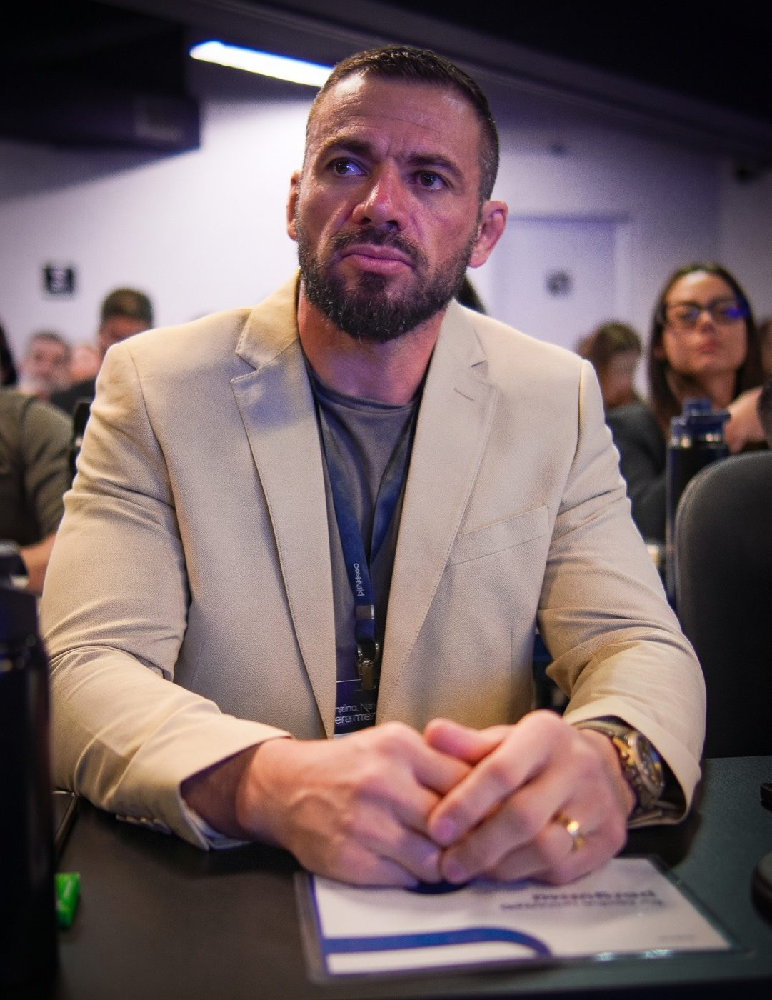
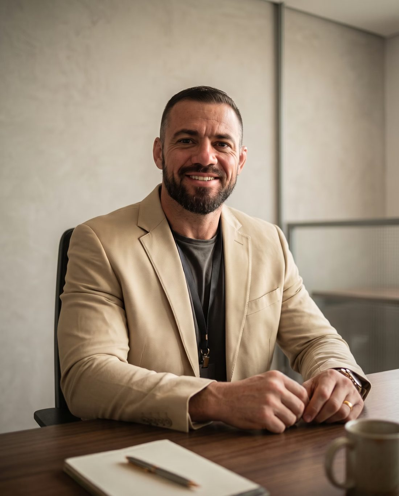
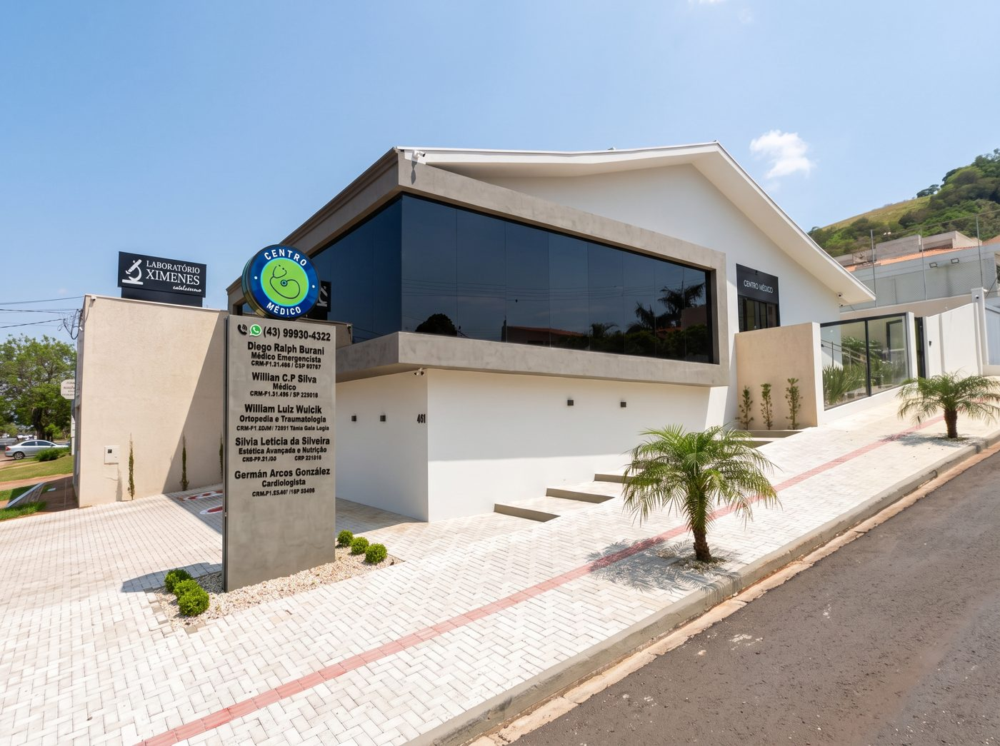

Reposição hormonal masculina
Avaliação e tratamento da andropausa a partir dos 40 anos, com acompanhamento por exames.
Anos de UTI e pronto socorro viraram um método de consultório: tempo para ouvir, exames no mesmo lugar e acompanhamento de perto.

Foco em quem quer chegar aos 50, 60 e 70 com energia, coração protegido e hormônios em equilíbrio.
Avaliação e tratamento da andropausa a partir dos 40 anos, com acompanhamento por exames.
Cuidado na transição e na menopausa para aliviar sintomas e proteger a saúde a longo prazo.
Liberação contínua e estável, sem os picos e quedas comuns em outras vias.
Rastreio de risco do coração com exames e plano individual de prevenção.
Laboratório, eletrocardiograma, Holter, MAPA e bioimpedância sem precisar ir a outro lugar.
Orientação sobre canetas regularizadas e alerta sobre produtos falsificados.

Médico com títulos em Medicina Intensiva e Medicina de Emergência. A paixão pelos plantões começou na faculdade e virou carreira dentro de pronto socorro e UTI.
Depois de anos tratando pacientes graves, decidiu agir antes. Levou para o consultório a mesma precisão da terapia intensiva, agora a serviço da prevenção.
Consultas de 30 a 40 minutos para entender sua história completa.
Exames, terapias injetáveis e procedimentos sem sair do consultório.
Parceria com ortopedia, dermatologia e cardiologia quando você precisar.
A equipe entra em contato depois da consulta para acompanhar sua evolução.
Fale com a equipe e escolha o melhor horário de segunda a sábado.
Avaliação completa, com exames feitos no próprio consultório quando indicado.
Você sai com um plano claro e segue acompanhado pela equipe.
Pronto para cuidar da saúde antes da urgência?
Agendar consultaArraste a linha sobre a foto para comparar cada caso.
Composição corporal acompanhada por bioimpedância no consultório.
Tratamento hormonal individualizado, com exames periódicos.
Caneta regularizada, plano alimentar e acompanhamento médico.
Ganho de massa magra aliado à prevenção cardiovascular.
Fotos publicadas com autorização por escrito dos pacientes, em caráter educativo. Resultados variam de pessoa para pessoa.
“Você nos trata de forma diferente.”
“Cheguei achando que meu cansaço era só idade. Foram quase 40 minutos de consulta, fiz os exames ali mesmo e saí com um plano claro. Três meses depois voltei a treinar e a dormir bem. Nunca tinha sido atendido assim.”
“Passei por vários médicos na menopausa e ninguém me ouvia de verdade. O Dr. Diego explicou cada etapa do tratamento com calma. A secretária me ligou depois para saber como eu estava. Me senti cuidada de verdade.”
“Fui para uma avaliação do coração por histórico na família. Eletrocardiograma, Holter e exames de sangue no mesmo lugar, sem correria. Ele trata com a seriedade de quem já viu o pior cenário, mas com muita leveza.”

Entre 30 e 40 minutos. O tempo serve para entender sua história, revisar exames e montar um plano junto com você.
Para homens na andropausa e mulheres na transição ou na menopausa, sempre após avaliação clínica e exames. O objetivo é saúde e qualidade de vida, não desempenho estético.
O implante libera o hormônio de forma contínua, com níveis mais estáveis ao longo do tempo. A indicação é individual e definida na consulta.
Sim. Coleta laboratorial, eletrocardiograma, Holter, MAPA e bioimpedância são feitos no próprio consultório.
Sim, a consulta atende Unimed e particular. Exames, terapias e implantes podem ter condições próprias. Confirme com a equipe ao agendar.
A equipe acompanha sua evolução. Dúvidas que exigem nova avaliação são tratadas em retorno ou no plano de acompanhamento.
Agende sua avaliação e receba um plano de prevenção feito para você.